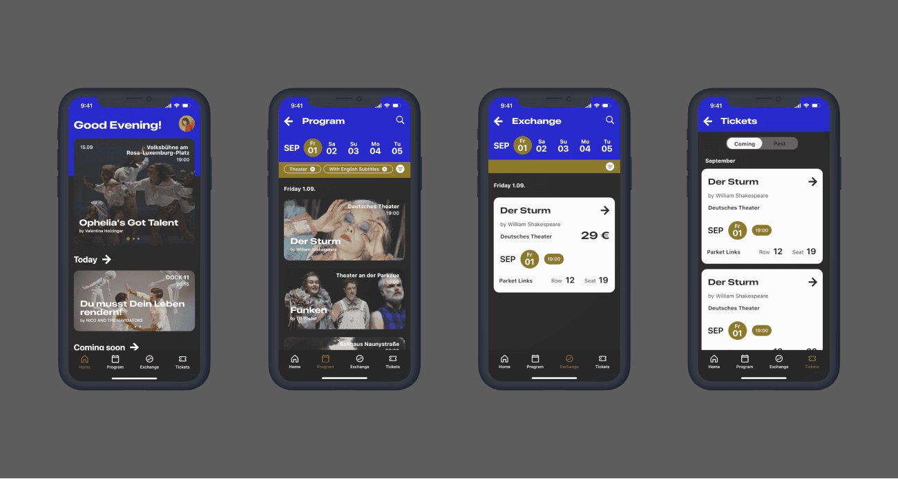
- Type
- Concept Project
- Category
- Ticketing App
- Timeframe
- 1 week
- Tools
- Figma, Photoshop
Challenge
From partial instructions to a distinguishable product
This student project was aimed to familiarised oneself with the two main guidelines for iOS and Android platforms.
The objective is to design 2 native apps that are complying with those guidelines and remain recognisable as one single product.
Both version needed to be prototyped paying special attention to the interaction
Objectives
All-in-One Theatre Hub: Comprehensive Listings, Ticketing, and Resale
Berlin possesses a lively theatre scene. But currently there are only few options to look for what is happening on stages around the city. From traditional city listings to specialised sites.
There is however no mobile app, that can contain all the information needed for the decision making or a unified ticketing service.
- 1
One place listing all theatre shows in town.
- 2
Offer a seamless experience to choose a play and purchase tickets directly.
- 3
Introduce a reliable resale platform for tickets when shows are sold out.
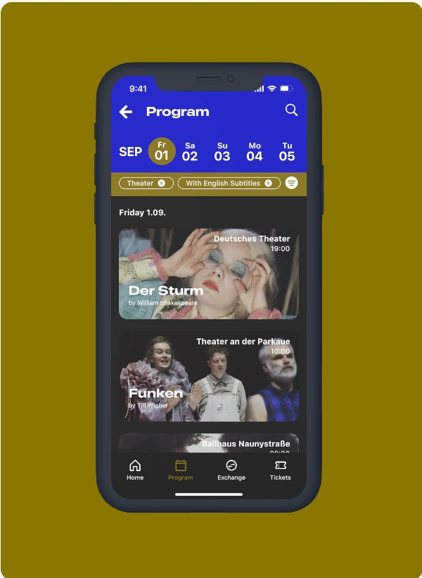
Competitive Analysis
Finding the blind spots of competitors
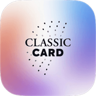
Classic Card
It is an app focused on Opera, Ballet and Classical Concerts, and directed only at people under 30 years old.
It offers the complete calendar, saved events and social features to go to these stages with friends.
It is directed to young people, and limits the kind of performing arts.
Schaubühne App
It is a pretty useful and complete app, displaying the program at the Schaubühne in Charlottenburg. It contains an embedded purchasing process. Offers other media of interest to theatre-goers.
It only showcases what the Schaubühne offers.
Spotlight will include all kinds of performing arts and directed to a wide range of ages.
Spotlight will host all venues in Berlin under one roof.
Opportunity
To provide an exhaustive program for all stages in the city, bookmarking and direct ticket purchasing feature. It would be the first platform for resale of tickets directly on the same app, with just a single tap.
Solution
All-in-One Theatre Hub: Comprehensive Listings, Ticketing, and Resale
The offer of the App is as straight-forward as possible: Simplifies to decision making by offering 3 steps into purchasing the desired product:
Program
Comprehensive listing of Berlin's theater shows by date, category, and venue.
Ticket Purchasing
In-app ticket purchase and storage, with scannable codes for easy access.
Exchange Platform
A simple way to offer or find tickets for sold-out shows, with notifications for availability.
User Flows
Close-circle flow from purchasing into ticket exchange
I extracted 2 main user stories that structured the main requirements I gathered from potential users:
As a first-time user, I want to browse shows and purchase a ticket.
"As a ticket holder unable to attend, I want to post my ticket for resale."
Four main features as primary screens accessible directly from the bottom navigation.
A straight forward, step-by-step process guides the users in the purchasing flow.
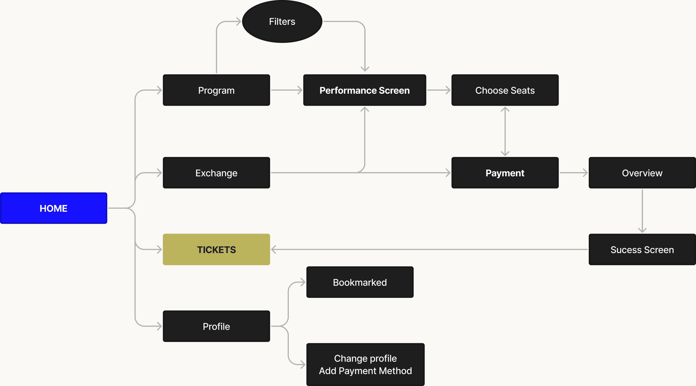
Guidelines and UI Patterns
Cross-Platform Consistency: Designing for iOS and Android Guidelines
Designing for iOS and Android required adhering to both platforms' guidelines, with a focus on maintaining a consistent look while meeting each system's requirements.
iOS
Material 2
UI Style Guide
Evoking the theater experience in the interface
A dark mode with bright colors evokes the theater experience. White typography and promotional images create contrast, while flexible system fonts and expanded types for titles add drama.
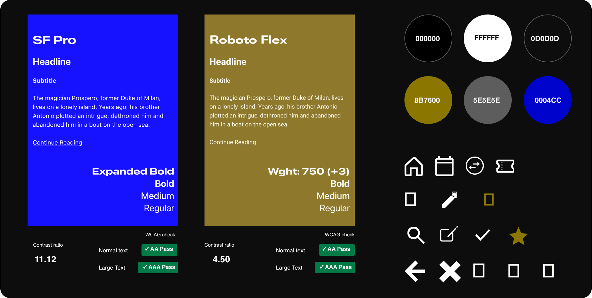
Typography: SF Pro on iOS (Expanded Bold, Bold, Medium, Regular) and Roboto Flex on Android (weight 750, Bold, Medium, Regular).
Colors: #000000, #FFFFFF, #0D0D0D, #8B7600, #5E5E5E, #0004CC.
Contrast: 11.12, passing WCAG AA and AAA for normal and large text; 4.50, passing AA and AAA as shown.
Final Design
The balance between recognizable patterns and expressive interface
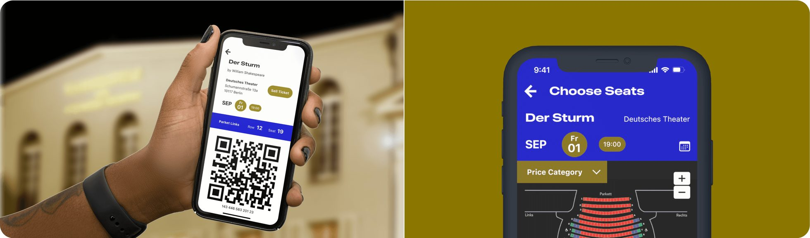
User Flow 1
"As a first time user, I want to inform myself about a play and purchase a ticket.”
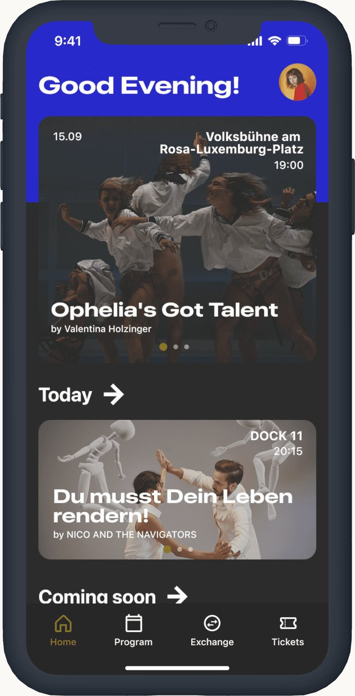
Scrollable Date Picker and Filter chips make a compact navigation through the program.
Home Screen works as playbill for upcoming shows, featured, festivals or bookmarked shows.
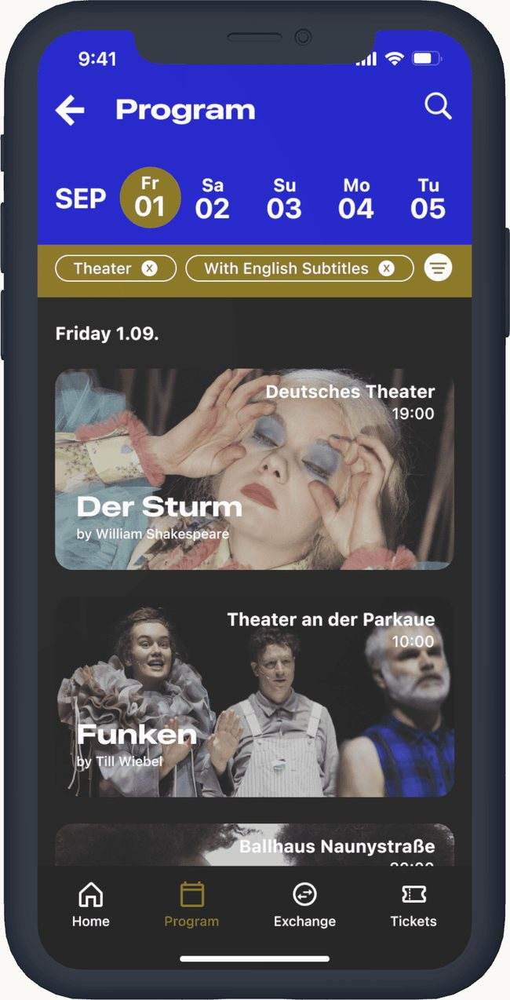
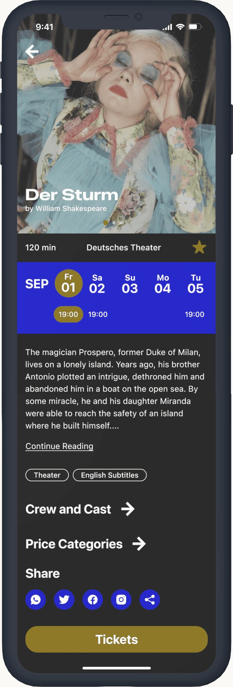
Most important information within the fold, more information can be expanded on command.
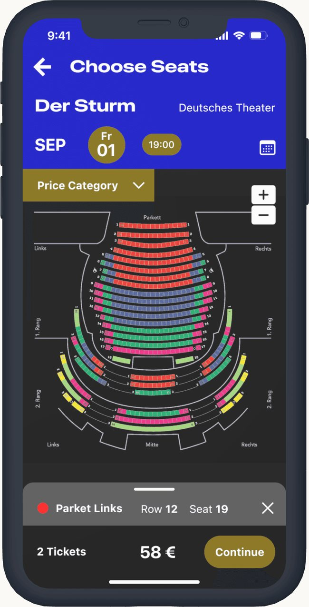
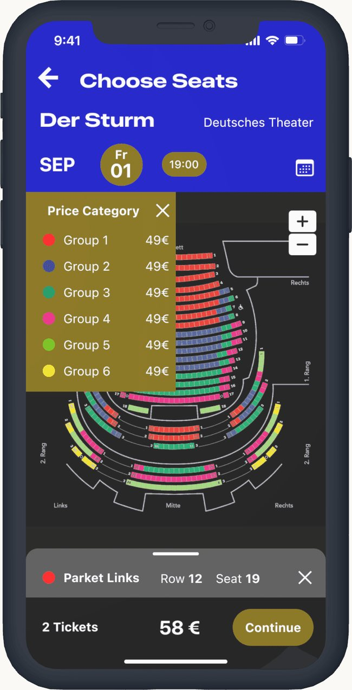
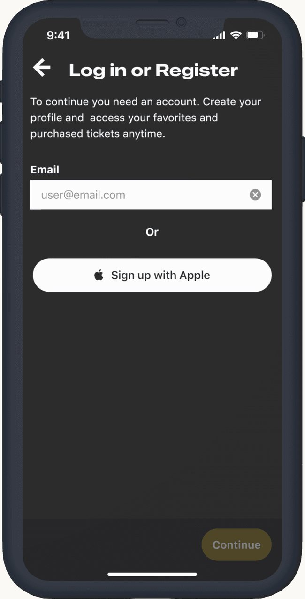
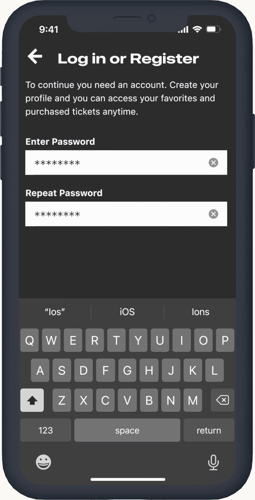
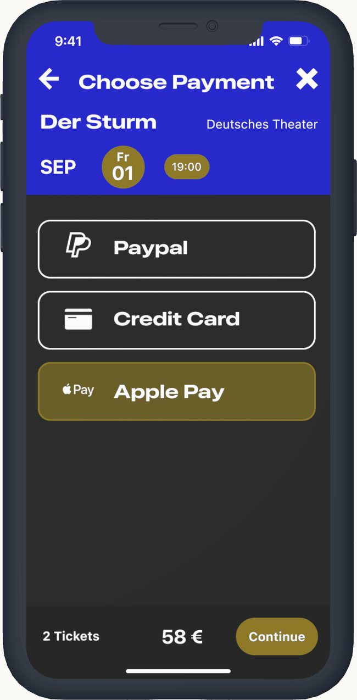
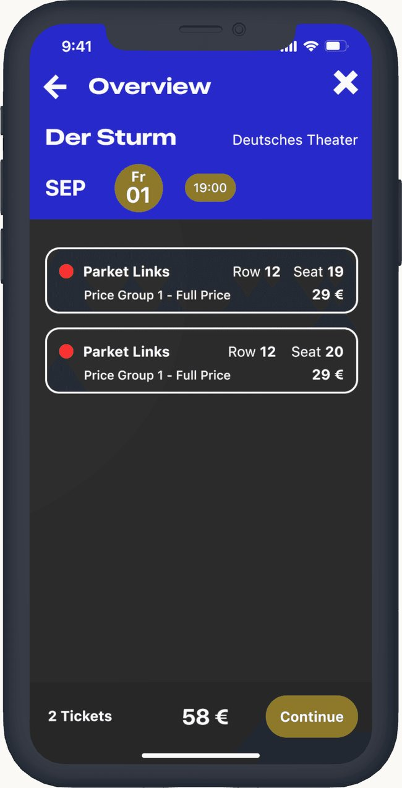
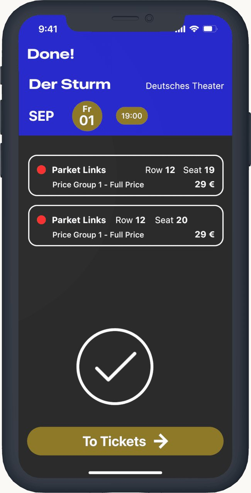
Only if necessary the login information and payment method is required of the user
Overview for reassurance of the user.
As final proof of purchase the user is directed to their tickets section
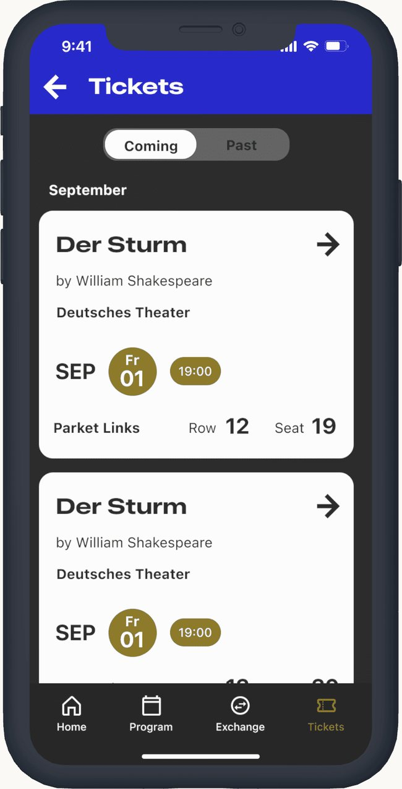
User Flow 2
“As a ticket owner that can't attend a show anymore, want to be able to post my offer to see if anyone else is looking to buy or exchange."
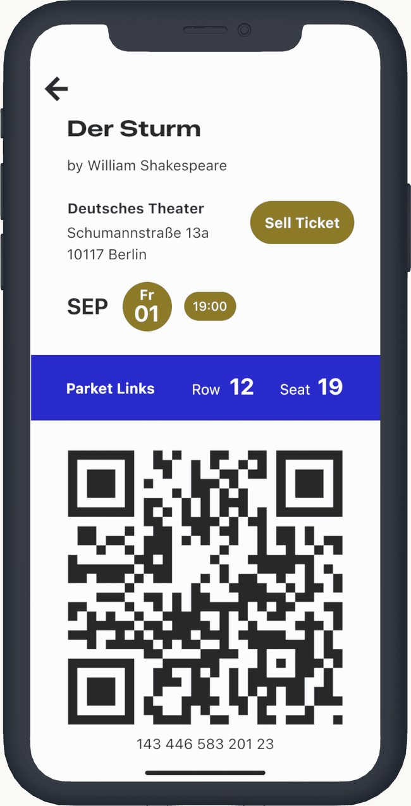
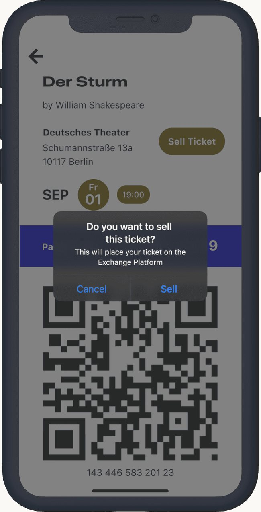
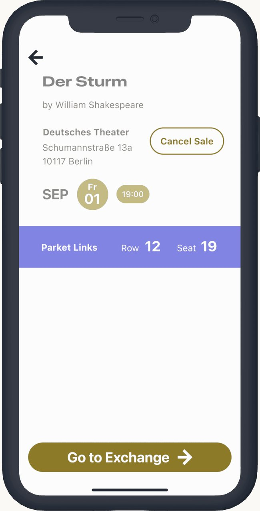
Tickets were made full-screen with a bright background for easier code scanning and clear display of information. The original card design was discarded as it couldn't hold all the details effectively
The process to put tickets for resale needed to be as simple as possible, and was included directly on the ticket.
The exchange platform is analogous to the browsing for shows, no extra effort is demanded from the user to learn how to use it.
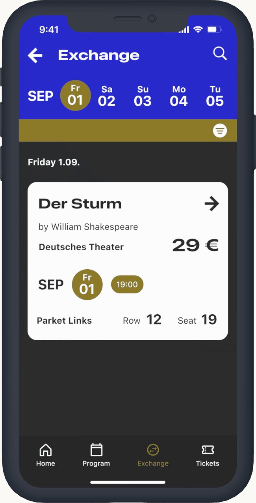
Prototype iOS
Prototype Android
Retrospective
Clarity and Consistency comes from iterative design and clear objectives
The design process involved numerous iterations to comply with native requirements while maintaining consistency. By focusing on two key user stories, the navigation was streamlined for a smooth user experience.
The design achieved clarity and consistency, with extensive prototyping enhancing the user experience. A second iteration would explore additional screens, user preferences, and more complex navigation features.
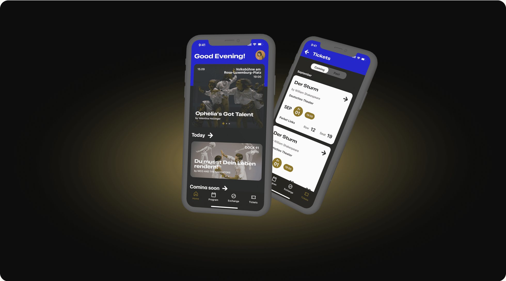